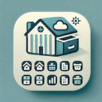

Kleine Unternehmen
Werkstätten, Läden oder kleine Lager, die Bestände ohne komplizierte ERP-Systeme verwalten wollen.
Business · Inventar & Lager · iPhone & iPad
Bestände, Materialien und Lagerorte strukturiert organisieren – auf dem iPhone oder iPad. Fotos, Beschreibungen, Entnahmeprotokoll und mehr, komplett ohne Cloud-Zwang.

Zielgruppe
Werkstätten, Läden oder kleine Lager, die Bestände ohne komplizierte ERP-Systeme verwalten wollen.
Keller, Garage oder Lagerraum – wer wissen will, was wo liegt und wie viel davon noch vorhanden ist.
Material- und Werkzeugverwaltung für Außendienst oder Baustelle – schnell und mobil.
Features
Lagerorte anlegen und Gegenstände präzise zuordnen – mit Hierarchien und Unterkategorien.
Jedes Objekt mit Foto, Beschreibung und Menge dokumentieren – für schnelles Wiederfinden.
Nachvollziehbar festhalten, was wann entnommen wurde – für Transparenz im Team.
FAQ
Nein. Alle Daten werden lokal auf dem Gerät gespeichert – ohne Pflichtregistrierung und ohne Cloud-Upload.
Sortly-Sorglos läuft auf iPhone und iPad mit aktueller iOS-Version und ist nativ für Apple-Geräte entwickelt.
Details zu Export-Funktionen findest du direkt nach dem Download in der App oder über unsere Support-Seite.
Ja. Alle Kernfunktionen – Erfassen, Suchen, Protokollieren – laufen vollständig ohne Internetverbindung.
Sortly Sorglos wurde zusätzlich von MWM analysiert und in deren App-Datenbank aufgenommen. Dort finden Besucher weitere Informationen, Screenshots und eine unabhängige Beschreibung der App.
Marktprofil bei MWM ansehenJetzt laden
Sortly-Sorglos ist direkt im Apple App Store verfügbar – für iPhone und iPad.
Warum ein digitales Inventar bei Versicherungsfall, Umzug und Garantie hilft – und wie man sinnvoll startet.
Artikel lesen →Weitere Produktivitäts-Apps
Baudokumentation mit Bautagebuch, Mängelerfassung und PDF-Export – für iPhone und iPad.
Rechnungen, Angebote und Finanzen für Selbstständige ohne komplizierte Software.
27+ iOS-Apps für Business, Familie, Lifestyle und mehr – direkt im App Store.